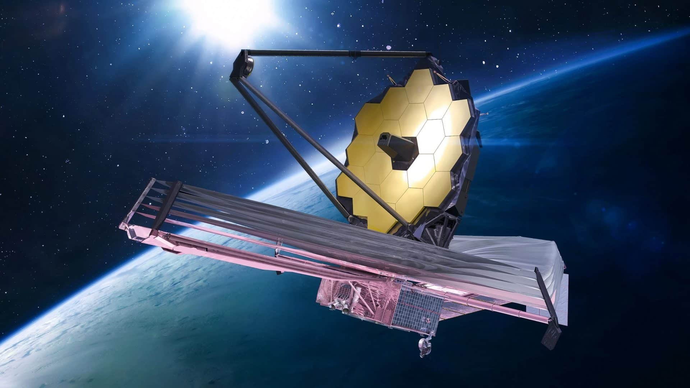
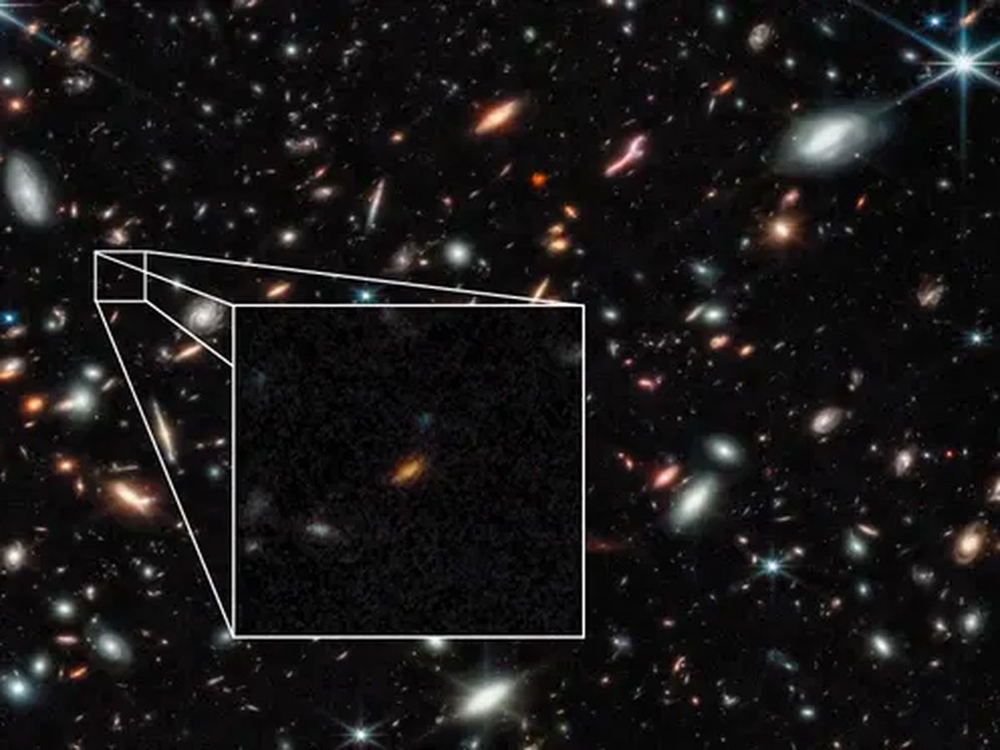

o telescópio espacial James Webb tem feito grandes imagens e descoberta sobre o espaço, o telescópio espacial descobriu grandes coisas em relação ao universo que os astrônomos previam ocorrer. O James Webb é um telescópio espacial que fica em orbita da terra isso permitindo que faça por meio dele e seus instrumentos pesquisas e observações de astros e galáxias milhões de anos luz de distância, mais potente do que o telescópio hubble, da decáda de 90. no qual fez imagens impressionantes tiradas pelo hubble.
Telescópio James Webb
O telescópio espacial James Webb tirou inúmeras fotos de galáxias e estrelas com seus espectrómicos de alta tecnologia de precisão consegue observar galáxias e estrelas do começo do univero e consegue ver além do que já se podia ver. Conseguindo por assim tirar fotos das primeiras galáxias do universo e na foto novas galáxias mais distantes foram vistas.
Fotos das primeiras galáxias do universo tirada pelo James Webb
O telescópio James Webb tem inúmeros instrumentos de pesquisa como espectrómicos e com grandes espelhos de outro para facilitar a captura e a reflexão dos sinais de infravermelhos com 6,5 metros de diâmetro e com um valor de 10 bilhões USD, cerca de 56R$ bilhões de reais

James Webb sendo construido